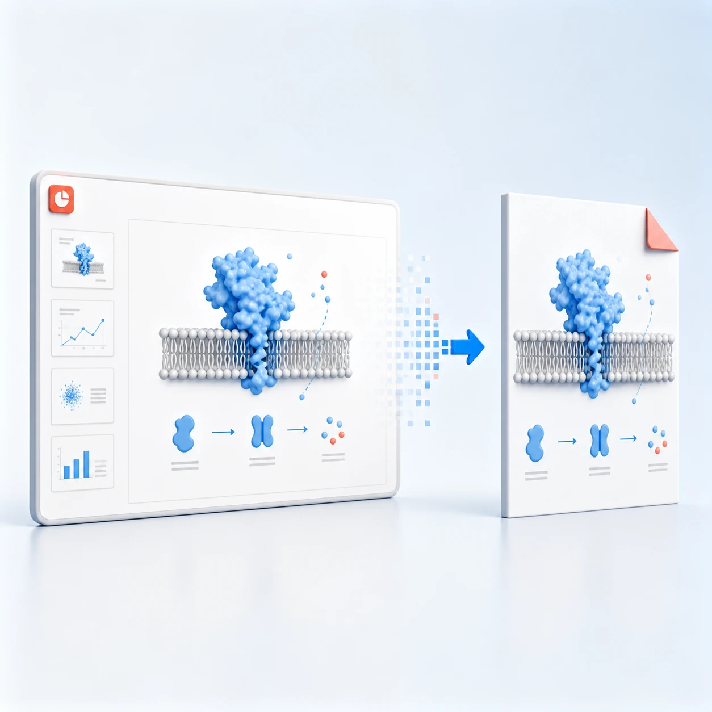

从幻灯片到论文插图，只保留内容本身。
直接调用 Microsoft PowerPoint，把指定幻灯片导出为高质量 PDF，并自动裁掉四周白边。默认保留文字、路径和矢量图形。
最快安装方式
复制一句话，交给 Codex。
请在这台 Windows 电脑上从 https://github.com/Lijinzh/pptx2pdfcrop 安装最新版 pptx2pdfcrop，运行 pptx2pdfcrop doctor 检查桌面版 Microsoft PowerPoint 自动化环境；验证成功后告诉我安装位置，并给我一条导出第 9 页为裁切 PDF 的示例命令。

POWERPOINTVECTOR PDFTIGHT CROP
Windows 原生PowerPoint COM 自动化
矢量优先不把整页栅格化
自动裁边默认保留 0.5 pt 安全边距
开源透明MIT License · GitHub
一条命令背后的完整实现。
工具始终让 PowerPoint 负责它最擅长的渲染，再用可测试的 Python 流程完成页码选择、内容检测、页面框收紧和结果写入。
- 01
解析页面与参数
读取
3,5,9-12或all，验证输出路径、阈值、DPI 与压缩选项。 - 02
由 PowerPoint 原生导出
创建独立隐藏实例，只读打开源文件；vector 模式导出 PDF，compatible 模式导出高分辨率 TIFF。
- 03
检测内容并收紧页面
在高分辨率渲染结果中找到非白色像素边界；vector 模式只移动内容流并重设 PDF 页面框。
- 04
原子写入最终 PDF
在临时目录完成全部处理，确认结果有效后再替换目标文件，异常时清理中间文件并关闭 PowerPoint。
清晰度优先，兼容模式兜底。
两条管线共享相同的页码解析、白边检测和安全写入逻辑，但对复杂透明效果采取不同策略。
当前选择：vector。默认保留 PowerPoint 原生 PDF 中的文字、路径和绘图对象。
需要细节时，文档已经准备好。
从安装、命令参数和导出模式，到完整实现逻辑、目录职责、开发测试与提交规范，都可以逐段查阅。
PowerShell
PS> uv tool install git+https://github.com/Lijinzh/pptx2pdfcrop.git PS> pptx2pdfcrop doctor [OK] Windows [OK] Microsoft PowerPoint COM PS> pptx2pdfcrop export drawing.pptx --slides 9 Created: drawing_slide-9_vector_cropped.pdf
小工具，也值得认真开源。
查看实现、报告问题、提交改进；如果它节省了你的论文排版时间，欢迎在 GitHub 上点一颗 Star。